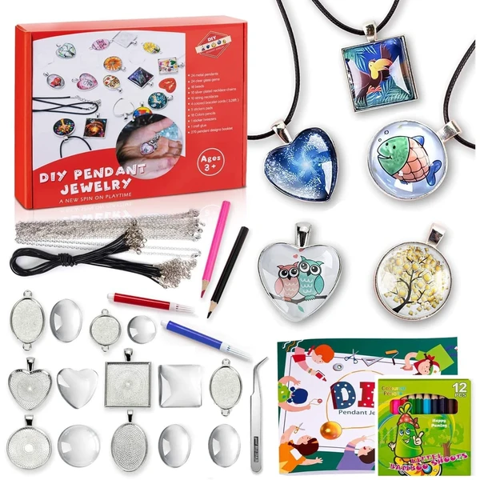
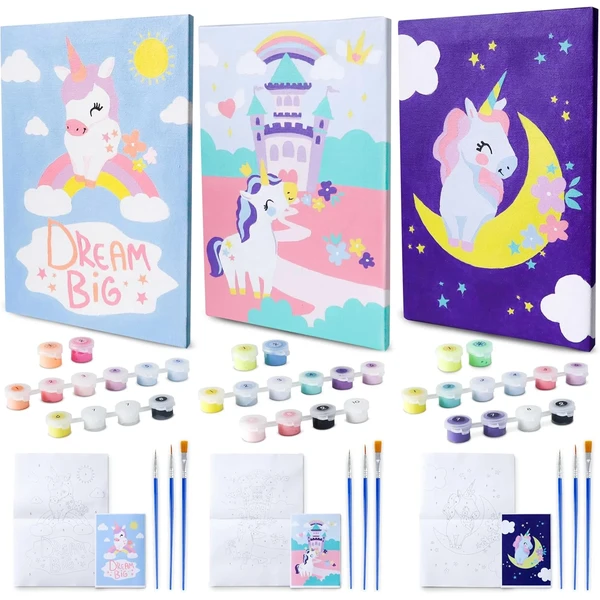
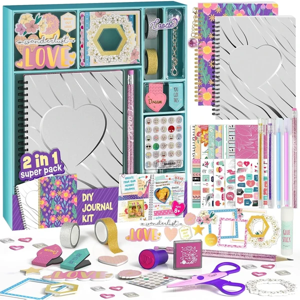

JOYIN Kit de Pintura de Rocas
Un set completo con 10 rocas para pintar, pinturas estándar, metálicas y que brillan en la oscuridad, además de gemas y pegatinas para decorar. Ideal para actividades creativas en familia.
⭐ ¿Por qué nos gusta?
- ✔ Incluye pinturas que brillan en la oscuridad.
- ✔ Set completo con gemas y pegatinas.
- ✔ Ideal para actividades creativas en grupo.
💬 Lo que más destacan las familias
Muchos padres coinciden en que la variedad de pinturas y materiales mantiene a los niños entretenidos durante bastante tiempo. Las que brillan en la oscuridad son las que más suelen sorprender.
Ver en Amazon

Coodoo Pintura Marmolado en Agua
Un kit para crear diseños de marmolado dejando caer pintura sobre agua y trasladando el patrón resultante al papel. Incluye pintura de seis colores, varillas y todo lo necesario para empezar.
⭐ ¿Por qué nos gusta?
- ✔ Técnica de marmolado fácil de aprender.
- ✔ Cada diseño resulta único e irrepetible.
- ✔ Incluye seis colores y todo el material.
💬 Lo que más destacan las familias
Una de las cosas más comentadas es lo sorprendente que resulta ver cómo se forma cada patrón, distinto cada vez. Los padres valoran también que sea una actividad relajante, casi como una manualidad para desconectar.
Ver en Amazon

Clementoni Taller de los Bolígrafos
Un laboratorio creativo para diseñar y personalizar bolígrafos propios con una gran variedad de accesorios y decoraciones. Incluye soporte y herramientas para un resultado sorprendente.
⭐ ¿Por qué nos gusta?
- ✔ Permite crear bolígrafos completamente personalizados.
- ✔ Incluye soporte y herramientas completas.
- ✔ Resultado final útil para usar después.
💬 Lo que más destacan las familias
Los compradores valoran especialmente que, al final, se quede con un bolígrafo que puede usar de verdad en el día a día. Se comenta que el proceso de personalizarlo resulta muy entretenido.
Ver en Amazon

JOYIN Imanes de Madera para Pintar
Un kit de 12 imanes de madera con temática de fantasía para pintar y decorar, incluyendo pincel y pegamento con purpurina. Al terminar, se pueden colgar en la nevera como decoración.
⭐ ¿Por qué nos gusta?
- ✔ 12 imanes de madera listos para pintar.
- ✔ Incluye pegamento con purpurina.
- ✔ El resultado se puede exhibir en la nevera.
💬 Lo que más destacan las familias
Entre los comentarios más habituales aparece lo sencilla que resulta la actividad, ideal para los primeros pasos en pintura. A los niños les hace ilusión ver su creación colgada en la nevera.
Ver en Amazon

EFO SHM Kit de Fabricación de Joyas
Un set para crear pulseras y collares con colgantes de resina, cuentas metálicas y cadenas. Incluye más de 90 imágenes para colorear y convertir en colgantes personalizados.
⭐ ¿Por qué nos gusta?
- ✔ Crea pulseras y collares personalizados.
- ✔ Más de 90 imágenes para colorear.
- ✔ Combina dibujo y bisutería en una actividad.
💬 Lo que más destacan las familias
Una de las cosas más comentadas es lo bien que combina el dibujo con la creación de joyas en un mismo set. Las familias destacan que hay materiales de sobra para varias sesiones de manualidades.
Ver en Amazon

Cool Maker PopStyle Bracelet Maker
Una máquina para crear pulseras de la amistad combinando cuentas y colores sin necesidad de nudos ni cierres. Incluye 170 cuentas y 22 gomas elásticas para diseñar una y otra vez.
⭐ ¿Por qué nos gusta?
- ✔ Máquina con almacenamiento incluido.
- ✔ 170 cuentas para combinar diseños.
- ✔ Sin nudos ni cierres complicados.
💬 Lo que más destacan las familias
Lo que más suele gustar es lo fácil que resulta crear pulseras distintas sin tener que atar nudos. Es una actividad que las niñas suelen disfrutar compartiendo con sus amigas.
Ver en Amazon

BONNYCO Pintar por Números Unicornios
Un pack de tres lienzos de unicornios para pintar por números, con pinturas que brillan en la oscuridad como segunda capa. Cada lienzo se puede regalar por separado o compartir entre varios niños.
⭐ ¿Por qué nos gusta?
- ✔ Tres lienzos para pintar por separado.
- ✔ Incluye pintura que brilla en la oscuridad.
- ✔ Se puede colgar como decoración al terminar.
💬 Lo que más destacan las familias
Una característica muy mencionada es el efecto de la pintura que brilla en la oscuridad, que sorprende una vez el cuadro está terminado. Los padres destacan también que viene con guía paso a paso, así resulta fácil incluso para quien nunca ha pintado.
Ver en Amazon

LAOESE Kit de Diario de Bricolaje
Un pack con dos diarios y una amplia variedad de accesorios para decorarlos y personalizarlos por completo. Incluye pegatinas, marcos de fotos, bolígrafos con purpurina y una caja de almacenamiento.
⭐ ¿Por qué nos gusta?
- ✔ Dos diarios completos para personalizar.
- ✔ Incluye pegatinas, marcos y accesorios variados.
- ✔ Caja de almacenamiento para guardarlo todo.
💬 Lo que más destacan las familias
No es raro encontrar comentarios sobre lo mucho que se entretienen decorando cada página con los accesorios incluidos. Se valora también que venga todo organizado en una caja, fácil de guardar entre uso y uso.
Ver en Amazon